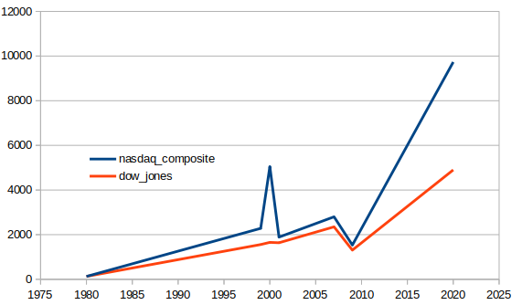
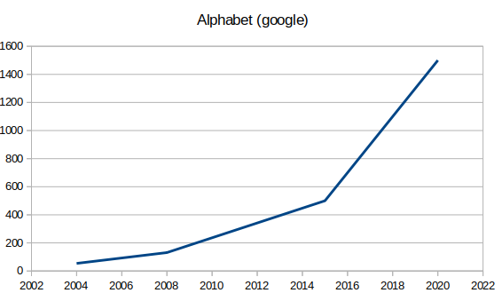
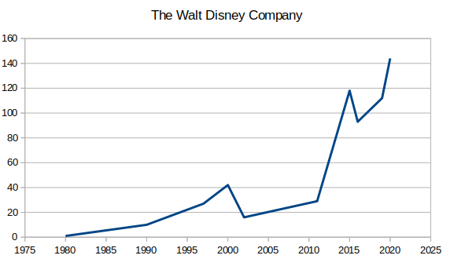
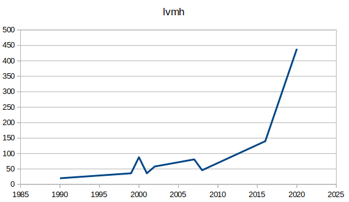

archive_budget Innovation et Territoire (version test-non fonctionnelle)
Paraphrasant le paradoxe de Solow, on peut dire que l’informatique est partout sauf dans les statistiques…
historique budget Innovation Territoire
archive_Le_geek_et_le_comptable
petit_questionnaire_pour_entrée_en_matière
pour cela comparons les chiffres d’une valeur boursière comme le Dow Jones à ceux du Nasdaq Composite (indice reflétant plus particulièrement le marché des technologies de l’information).
Attention : les courbes sont ramenées à un nombre de points identiques au départ.

On voit que de 2010 à 2020, les chiffres sont triplées pour le dow jones et qu’ils sont à peu près multipliés par 4 pour le Nasdaq Composite
Remarquons aussi que le niveau du Nasdaq Composite actuel est bien au-delà du plus haut niveau enregistré avant que la bulle des années 2000 éclate.
Regardons maintenant alphabet (google), et là on retrouve aussi un graphique avec une forte croissance (quasi exponentielle). Multiplié par 8 de 2010 à 2020.

est-ce que les industries numériques sont les seules concernées par cette progression ?
Regardons une industrie du cinéma/divertissement comme The Walt Disney Company:

on retrouve le même type de courbe multipliée par 7 de 2010 à 2020.
regardons l’industrie du luxe avec le groupe lvmh :

la courbe est multipliée par 9 de 2010 à 2020.
La théorie du ruissellement, nous expliquerait que les geeks/startuppers doivent être épris de produit de luxe et de cinéma. La consommation de ces produits cela expliquerait ces fortes progressions. Que ce soit le cinéma ou le luxe, on imagine pourtant mal un individu achetant pour son propre usage des centaines de billets de cinéma et se promener avec une panoplie complète faite de tous les articles de mode qu'il a pu obtenir sur le marché du luxe …
au sujet du le luxe, un élément d'explication plus convaincant est certainement l’important développement de l'utilisation publicitaire des réseaux sociaux ces dernières années. Cf (1)
on voit donc que la situation est contrastée et métrite d’être regardée de plus près… quelques kpi (Key Performance Indicators) seraient certainement les bienvenues pour aller un peu plus loin dans la réflexion…
...mais, on peut déjà remarquer que tous les secteurs en forte croissance que nous venons d’évoquer ont comme point commun de mettre en avant la créativité et l’innovation.
Ce n’est certainement pas le seul élément d’explication mais cela peut être un point de départ...
pou les différentes courbes faire une recherche par exemple sur google cotation suivi du «nom de la cotation» ?
-faire de budget IT un projet opensource.
pour la première édition, j'ai apprécié de participer au défi suivant https://forum.datafin.fr/t/decofi-lagence-de-notation-des-communes/481).
mais aucun projet ne mettait en avant l'innovation. c'est pourquoi pour ma deuxième participation, j'ai proposé budgetIT.
un choix rapide m'a conduit à utiliser drupal pour réaliser ce site.
...mais beaucoup de questions restent en suspens.
voici donc cet historique pour en évoquer quelques unes...
pour une définition du hacker voir ici:
la conjecture (ou loi) de moore avant la loi de moore.
"There's Plenty of Room at the Bottom..." Richard P. Feynman http://nanoparticles.org/pdf/Feynman.pdf
arrivée du circuit intégré, voir 1965 gordon moore. https://newsroom.intel.com/wp-content/uploads/sites/11/2018/05/moores-law-electronics.pdf
la conjecture (ou loi) de moore après la loi de moore...
...les innovations ne sont pas des phénomènes isolés... mais arrivent sous forme regroupée. principe de grappes d’innovations de Joseph Schumpeter.